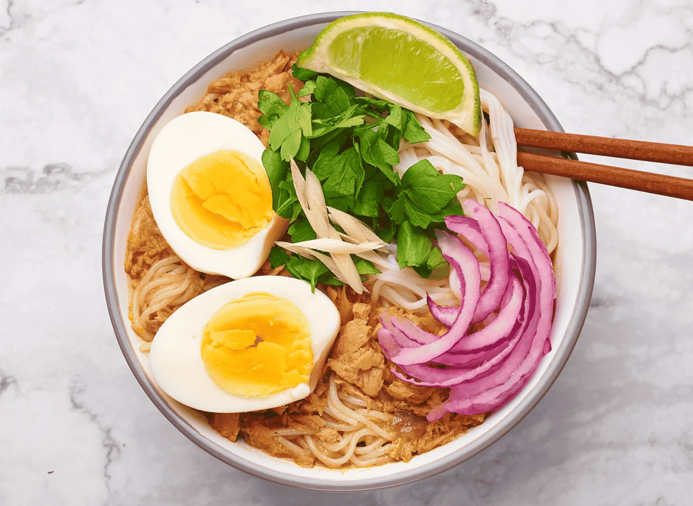

Mohinga

Description
Mohinga is often considered the national dish of Burma (Myanmar), offering a comforting blend of fragrant broth, tender noodles, and lively spices.
Locals typically enjoy it in the morning, though its popularity extends throughout the day.
Ingredients
- fresh herbs
- spices
- The subtle sweetness of the fish-based broth
- onion
- lemon grass
- tumeric
Preperation steps
- In a large pot, bring the water to a gentle boil and add the fish, lemongrass, onion, garlic, ginger, and turmeric. Let it simmer for 15 minutes until the fish is fully cooked and tender. Skim off any foam that rises to the surface to keep the broth clear.
- Carefully remove the cooked fish and set it aside to cool slightly. Strain the broth to remove the lemongrass and any solid bits, then return the clear broth to the pot.
- Debone the fish, flaking it into small pieces while discarding any skin or bones. Mash it slightly with a fork to create a textured consistency that will blend well into the soup.>
index